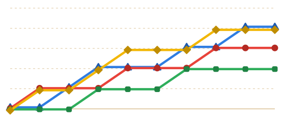

EINDE VAN HET SPEL · 10 RONDES
Floris is de Plas-kampioen!
 Bot 2
Bot 2
2e
 4
4 41
41
441
 Floris
Floris
1e
533
533 Speler 2
Speler 2
3e
428
4284e
 Bot 1 · 3 sterren
Bot 1 · 3 sterrenBonussterren
3 van 3 uitgereiktMinigame-sterMeeste minigames gewonnen
Floris · 6×MuntensterMeeste munten verzameld
Speler 2 · 96PechsterVaakst op een pechvakje
Bot 1 · 5×Sterren per ronde
FlorisSpeler 2Bot 1Bot 2
543210

12345678910